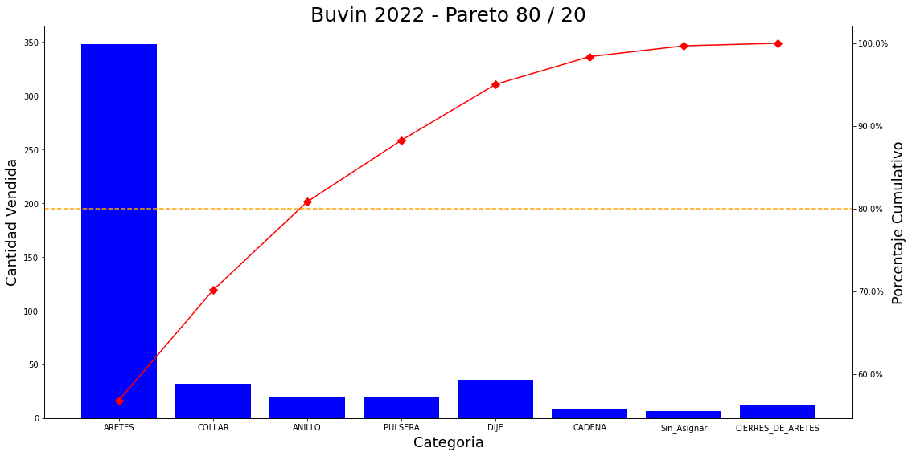

Store Decision Making Analysis
Contents
Store Decision Making Analysis#
Moshe Rosenstock#
import pandas as pd
import numpy as np
import matplotlib.pyplot as plt
from openpyxl import load_workbook
from matplotlib.ticker import PercentFormatter
import xlsxwriter
pd.options.mode.chained_assignment = None
# DEFINIR NOMBRE DE LA TIENDA
tienda = 'Buvin'
Data Preview#
df = pd.read_excel('/Users/mosherosenstock/Desktop/buvin/ventas_buvin_2022.xlsx')
# change all the values " " to "_" inside df["sNombreGrupo"]
df["sNombreGrupo"] = df["sNombreGrupo"].str.replace(" ", "_")
# drop unnecessary columns
df = df.drop(columns=['sCliente', 'sTelefono','sDireccion_E_Mail', 'sNombre','_x000D_\nsNombre'])
df.head()
| Item | Código | Descripción | sbodega | nPVP | nPrecioFinal | nPrecioFinal.1 | nTotal | sFactura | sVendedor | dFecha | sProveedor | sGrupo | sNombreGrupo | |
|---|---|---|---|---|---|---|---|---|---|---|---|---|---|---|
| 0 | 184 | BUCP15 | COLLAR O/A 14 ANGEL DE LA GUARDA PERLAS | 01 | 1 | 355.75 | 320.18 | 320.18 | 25721 | 1176 | 12-03-2022 | 7 | 13 | COLLAR |
| 1 | 185 | BUE1210 | AR O/A 14 K BOLITA Y PERLA | 01 | 1 | 103.54 | 103.54 | 103.54 | 25490 | 1117 | 27-01-2022 | 7 | 5 | ARETES |
| 2 | 186 | BUE1210 | AR O/A 14 K BOLITA Y PERLA | 01 | 1 | 103.54 | 103.54 | 103.54 | 25785 | 1117 | 24-03-2022 | 7 | 5 | ARETES |
| 3 | 187 | BUE1735 | AR O/A 14 K CORAZON BORDE BOLITAS CZ | 01 | 1 | 90.27 | 90.27 | 90.27 | 25806 | 1117 | 29-03-2022 | 7 | 5 | ARETES |
| 4 | 188 | BUE1832 | O/A 14K CZ CENTRO ESTRELLA | 01 | 1 | 100.89 | 100.89 | 100.89 | 26009 | 1117 | 17-05-2022 | 7 | 5 | ARETES |
# print the sum of all the values inside df["nPrecioFinal.1"]
print("--> Venta Total en 2022 {} \n -Se vendieron un total de {} productos. \n -Representan este monto: ${}".format(tienda, len(df), round(df["nTotal"].sum())))
--> Venta Total en 2022 Buvin
-Se vendieron un total de 484 productos.
-Representan este monto: $84450
Show Product sales by Code-Number#
# create a dictitonary that contains the code and the number of items
productos = df['Código'].value_counts().to_dict()
# print('PRODUCTOS',productos)
# make a dataframe with the dictionary
# the index goes from 0 to the number of items in the dictionary
# the columns are the keys of the dictionary
df2 = pd.DataFrame.from_dict(productos, orient='index', columns=['Cantidad Vendida'])
# add a title to the index column "Codigo Producto"
df2.index.name = 'Código Producto'
# sort the dataframe by the column "Cantidad Vendida"
df2.sort_values(by='Cantidad Vendida', ascending=False, inplace=True)
# Determine to which category each product belongs (categories are defined by df["sNombreGrupo"])
# create a dictionary with the code and the category
categorias = df[['Código', 'sNombreGrupo']].set_index('Código').to_dict()['sNombreGrupo']
# add a column to the dataframe df2 with the category
df2['Categoría'] = df2.index.map(categorias)
# # print the top values of the dataframe
df2
| Cantidad Vendida | Categoría | |
|---|---|---|
| Código Producto | ||
| BUEC1EY | 12 | CIERRES_DE_ARETES |
| BUECZ3 | 8 | ARETES |
| BUE2614 | 8 | ARETES |
| BUEH20 | 8 | ARETES |
| BUEMB6 | 7 | ARETES |
| ... | ... | ... |
| BUPA125422 | 1 | CADENA |
| BUP4197 | 1 | COLLAR |
| BUPA1274 | 1 | COLLAR |
| BUNCS70 | 1 | CADENA |
| BURSR5385B | 1 | ANILLO |
242 rows × 2 columns
Determine to which category each product belongs#
(categories are defined by df[“sNombreGrupo”])
# Determine to which category each product belongs (categories are defined by df["sNombreGrupo"])
# create a dictionary with the code and the category
categorias = df[['Código', 'sNombreGrupo']].set_index('Código').to_dict()['sNombreGrupo']
# add a column to the dataframe df2 with the category
df2['Categoría'] = df2.index.map(categorias)
# take out all the rows that have the "REPUESTOS" under the column "Categoría"
df2 = df2[df2['Categoría'] != 'REPUESTOS']
# create a dictionary with the code and the final price of each product
precios = df[['Código', 'nTotal']].set_index('Código').to_dict()['nTotal']
# print the sum of the values in the column "Cantidad Vendida"
print("Total Productos Vendidos: ",df2['Cantidad Vendida'].sum())
# print("Total Vendido: $", df2['Total Vendido'].sum())
# rearrange the columns
df2 = df2[['Categoría', 'Cantidad Vendida']]
# add a third column with the amount of money generated by each product
# to do so, multiply the number of items sold by the price of each item
df2['Total Vendido'] = df2['Cantidad Vendida'] * df2.index.map(precios)
# sort by the column "Total Vendido"
df2.sort_values(by='Total Vendido', ascending=False, inplace=True)
# add a column that is called "Precio Unitario" and contains the price of each item (which is "Total Vendido" divided by "Cantidad Vendida")
df2['Precio Unitario'] = df2['Total Vendido'] / df2['Cantidad Vendida']
df2['Clasificacion'] = np.where(df2["Precio Unitario"] < 50, 'A',
np.where((df2["Precio Unitario"] >= 50) & (df2["Precio Unitario"] < 100), 'B',
np.where((df2["Precio Unitario"] >= 100) & (df2["Precio Unitario"] < 150), 'C',
np.where((df2["Precio Unitario"] >= 150) & (df2["Precio Unitario"] < 200), 'D',
np.where((df2["Precio Unitario"] >= 200) & (df2["Precio Unitario"] < 500), 'E',
np.where((df2["Precio Unitario"] >= 500) & (df2["Precio Unitario"] < 10000), 'F',np.nan)
)))))
# print just the rows that have the same index at least 5 times
# df2[df2.index.duplicated(keep=False)].sort_values(by='Cantidad Vendida', ascending=False)
df2.sort_values(by='Cantidad Vendida', ascending=False, inplace=True)
df2.head(15)
# # take out all the rows that have the "REPUESTOS" under the column "Categoría"
# df2 = df2[df2['Categoría'] != 'REPUESTOS']
df2
Total Productos Vendidos: 484
| Categoría | Cantidad Vendida | Total Vendido | Precio Unitario | Clasificacion | |
|---|---|---|---|---|---|
| Código Producto | |||||
| BUEC1EY | CIERRES_DE_ARETES | 12 | 265.44 | 22.12 | A |
| BUE2614 | ARETES | 8 | 410.64 | 51.33 | B |
| BUEH20 | ARETES | 8 | 1359.28 | 169.91 | D |
| BUECZ3 | ARETES | 8 | 637.20 | 79.65 | B |
| BUE5989 | ARETES | 7 | 401.45 | 57.35 | B |
| ... | ... | ... | ... | ... | ... |
| BUECZ71 | ARETES | 1 | 284.07 | 284.07 | E |
| BUE5146 | ARETES | 1 | 264.60 | 264.60 | E |
| BURA781 | ANILLO | 1 | 262.83 | 262.83 | E |
| BUEA1362 | ARETES | 1 | 262.83 | 262.83 | E |
| BUE9693 | ARETES | 1 | 60.93 | 60.93 | B |
242 rows × 5 columns
# create a variable numero_categorias that contains the number of categories (without repeating the same category twice)
numero_categorias = 0
categorias=[]
DFs=[]
for i in range(len(df2["Categoría"])):
if df2["Categoría"][i] not in categorias:
categorias.append(df2["Categoría"][i])
numero_categorias += 1
print("Total de categorias: ", numero_categorias)
# ---------------------------------------------
# CREATING THE DATAFRAMES FOR EACH SUBCATEGORY
# print the DF just with the values that are from the category "i" inside categories
for i in range(numero_categorias):
# create a new dataframe that contains only df2[df2['Categoría'] == categorias[i]] and its named as the categorias[i] and save it in a excel file
exec("{} = df2[df2['Categoría'] == categorias[i]]".format(categorias[i]))
# sort each dataframe by the column "Cantidad Vendida"
exec("{} = {}.sort_values(by='Cantidad Vendida', ascending=False)".format(categorias[i], categorias[i]))
#==================================================================================================
# Add a column "Caregoría" to each dataframe
# exec("{} = {}.assign(Categoría = categorias[i])".format(categorias[i], categorias[i]))
# exec(" {}.name = categorias[i]".format(categorias[i]))
# drop the column "Categoria" from the DF
# exec("{} = {}.drop(columns=['Categoría'])".format(categorias[i], categorias[i]))
# reset the index of each dataframe
exec("{} = {}.reset_index()".format(categorias[i], categorias[i]))
# change the order of the columns to be ['Clasificacion', 'Cantidad Vendida', 'Total Vendido']
exec("{} = {}[['Clasificacion', 'Cantidad Vendida', 'Total Vendido']]".format(categorias[i], categorias[i]))
# sum the values of the column "Cantidad Vendida" by category
exec("{} = {}.groupby('Clasificacion',as_index=False).sum()".format(categorias[i], categorias[i]))
# sort the values by the column "Cantidad Vendida"
exec("{} = {}.sort_values(by='Cantidad Vendida', ascending=False)".format(categorias[i], categorias[i]))
# add a column with the percentage of total sales for each product (df['nPrecioFinal.1']) by category
exec("{}['Porcentaje de ventas'] = {}['Total Vendido'] / {}['Total Vendido'].sum() * 100".format(categorias[i], categorias[i], categorias[i]))
# add a column with the cumulative percentage formula: ["Cantidad Vendida"].cumsum()/["Cantidad Vendida"].sum()*100
exec("{}['Porcentaje Cumulativo'] = {}['Cantidad Vendida'].cumsum()/{}['Cantidad Vendida'].sum()*100".format(categorias[i], categorias[i], categorias[i]))
#==================================================================================================
# append each dataframe inside the variable DFs
exec("DFs.append({})".format(categorias[i]))
Total de categorias: 8
Calculate the percentage of total sales for each product by category#
# calculate the percentage of total sales for each product (df['nPrecioFinal.1']) by category
# create a DataFrame with the category, total sales and the percentage
porcentajes = df[['sNombreGrupo', 'nTotal']]
# sum the values of the column "nPrecioFinal.1" by category
porcentajes = porcentajes.groupby('sNombreGrupo').sum()
# add a column with the amount of items sold by category
grupos = df['sNombreGrupo'].value_counts().to_dict()
# add a column with the amount of items sold by category using the dictionary "grupos"
porcentajes['Cantidad Vendida'] = porcentajes.index.map(grupos)
# move the column "Cantidad Vendida" to the first position
cols = porcentajes.columns.tolist()
cols = cols[-1:] + cols[:-1]
porcentajes = porcentajes[cols]
# calculate the percentage of total sales for each category
porcentajes['Porcentaje de ventas'] = porcentajes['nTotal'] / porcentajes['nTotal'].sum() * 100
# sort the values by the column "Porcentaje"
porcentajes.sort_values(by='Porcentaje de ventas', ascending=False, inplace=True)
# Rename the column "nPrecioFinal.1" to "Venta Total"
porcentajes.rename(columns={'nTotal': 'Venta Total'}, inplace=True)
# Rename the index column "sNombreGrupo" to "Categoría"
porcentajes.index.name = 'Categoría'
# ---------------------------------------------------
# add a column with the cumulative percentage
cumulative_sum = porcentajes["Venta Total"].cumsum()
for i in range(len(cumulative_sum)):
cumulative_sum[i] = cumulative_sum[i]/porcentajes["Venta Total"].sum()*100
cumulative_sum.to_frame()
# take out all the rows that have the "REPUESTOS" under the column "Cantidad Vendida"
porcentajes = porcentajes[porcentajes['Cantidad Vendida'] != 'REPUESTOS']
print(porcentajes['Cantidad Vendida'].sum())
porcentajes["Porcentaje Cumulativo"] = cumulative_sum # df2["Cantidad Vendida"].cumsum()#/df2["Cantidad Vendida"].sum()*100
# ---------------------------------------------------
#add % sign to the column "Porcentaje Cumulativo"
porcentajes['Porcentaje Cumulativo']= porcentajes['Porcentaje Cumulativo']#.map('{:,.2f}%'.format)
# add Dollar sign to the column "Venta Total"
porcentajes['Venta Total'] = porcentajes['Venta Total'].map('${:,.2f}'.format)
#add % sign to the column "Porcentaje"
porcentajes['Porcentaje de ventas'] = porcentajes['Porcentaje de ventas'].map('{:,.2f}%'.format)
# porcentajes.index = porcentajes.index.str.replace("_SWAROVSKI", "_")
# take out all the rows that have the "REPUESTOS" under the index "Cantegoría"
porcentajes = porcentajes[porcentajes.index != 'REPUESTOS']
print("Porcentaje de ventas por categoría")
porcentajes
484
Porcentaje de ventas por categoría
| Cantidad Vendida | Venta Total | Porcentaje de ventas | Porcentaje Cumulativo | |
|---|---|---|---|---|
| Categoría | ||||
| ARETES | 348 | $47,977.77 | 56.81% | 56.812278 |
| COLLAR | 32 | $11,248.18 | 13.32% | 70.131670 |
| ANILLO | 20 | $9,030.40 | 10.69% | 80.824906 |
| PULSERA | 20 | $6,282.47 | 7.44% | 88.264214 |
| DIJE | 36 | $5,705.47 | 6.76% | 95.020275 |
| CADENA | 9 | $2,840.19 | 3.36% | 98.383451 |
| Sin_Asignar | 7 | $1,101.94 | 1.30% | 99.688299 |
| CIERRES_DE_ARETES | 12 | $263.23 | 0.31% | 100.000000 |
Plot 80/20 Pareto for cummulative sales#
# Set figure and axis
fig, ax = plt.subplots(figsize=(18,9))
# Plot bars (i.e. frequencies)
ax.bar(porcentajes.index, porcentajes["Cantidad Vendida"], color="blue")
ax.set_title("{} 2022 - Pareto 80 / 20".format(tienda), fontsize =25)
ax.set_xlabel("Categoria", fontsize =18)
ax.set_ylabel("Cantidad Vendida", fontsize =18);
# Second y axis (i.e. cumulative percentage)
ax2 = ax.twinx()
ax2.plot(porcentajes.index, porcentajes["Porcentaje Cumulativo"], color="red", marker="D", ms=7)
ax2.axhline(80, color="orange", linestyle="dashed")
ax2.yaxis.set_major_formatter(PercentFormatter())
ax2.set_ylabel("Porcentaje Cumulativo", fontsize =18);
# save fig as jpg
fig.savefig("{}-80-20pareto.jpg".format(tienda))

Plot 80/20 Pareto for sales of each particular category#
# Set figure and axis
fig, ax = plt.subplots(figsize=(10,5))
for i in range(len(categorias)):
# Set figure and axis
fig, ax = plt.subplots(figsize=(10,5))
# Plot bars (i.e. frequencies)
ax.bar(DFs[i]['Clasificacion'], DFs[i]["Cantidad Vendida"], color="blue")
ax.set_title("Producto: {} Pareto 80 / 20".format(categorias[i]), fontsize =25)
ax.set_xlabel("Categoria", fontsize =18)
ax.set_ylabel("Cantidad Vendida", fontsize =18);
# Second y axis (i.e. cumulative percentage)
ax2 = ax.twinx()
ax2.plot(DFs[i]['Clasificacion'], DFs[i]["Porcentaje Cumulativo"], color="red", marker="D", ms=7)
ax2.axhline(80, color="orange", linestyle="dashed")
ax2.yaxis.set_major_formatter(PercentFormatter())
ax2.set_ylabel("Porcentaje Cumulativo", fontsize =18);
# save fig as jpg
fig.savefig("{}-80-20pareto.jpg".format(categorias[i]))

Code to Save files in Excel Document#
# Create a Pandas Excel writer using XlsxWriter as the engine.
writer = pd.ExcelWriter("{}_after_analysis.xlsx".format(tienda), engine='xlsxwriter')
# Convert the dataframe to an XlsxWriter Excel object.
df2.to_excel(writer, sheet_name='Por Producto y Codigo')
porcentajes.to_excel(writer, sheet_name='Porcentajes')
# Get the dimensions of the dataframe.
(max_row, max_col) = df.shape
# ---------------------------------------------
#add the extra DataFrames
for i in range(len(categorias)):
DFs[i].to_excel(writer, sheet_name=str(categorias[i]))
worksheet = writer.sheets[categorias[i]]
# Make the columns wider for clarity.
worksheet.set_column(0, max_col - 1, 18)
# Insert an image.
worksheet.insert_image('B9', '{}-80-20pareto.jpg'.format(categorias[i]))
# ---------------------------------------------
# Get the xlsxwriter workbook and worksheet objects.
workbook = writer.book
worksheet1 = writer.sheets['Por Producto y Codigo']
worksheet2 = writer.sheets['Porcentajes']
# Make the columns wider for clarity.
worksheet1.set_column(0, max_col - 1, 18)
worksheet2.set_column(0, max_col - 1, 18)
# Set the autofilter.
worksheet1.autofilter(0, 0, max_row, max_col - 1)
# Insert an image.
worksheet2.insert_image('G3', '{}-80-20pareto.jpg'.format(tienda))
# Close the Pandas Excel writer and output the Excel file.
writer.save()
Code to save sales per month in Excel File#
# create a new dataframe for the sales of each month of the year (using the original dataframe "df") the date is given by the column "dFecha"
# first convert the column "dFecha" to a datetime object
df['dFecha'] = pd.to_datetime(df['dFecha'],dayfirst=True)
# create a new column "Mes" that contains the month of the year
df['Mes'] = df['dFecha'].dt.month
meses=['enero','febrero','marzo','abril','mayo','junio','julio','agosto','septiembre','octubre','noviembre','diciembre']
for i in range(0,12):
# create 12 new dataframes, one for each month of the year (enero, febrero, marzo, etc.)
# each dataframe will be named after the month of the year meses[i]
# create a new dataframe for each month of the year
locals()[meses[i]] = df[df['Mes'] == i+1]
#drop the following columns from the dataframe
locals()[meses[i]].drop(['nTotal','sFactura','sVendedor',"sProveedor","sGrupo","Item","nPrecioFinal"], axis=1, inplace=True)
# rearrange the columns in the following order: Código Descripción Proovedor Categoria Precio Venta sbodega nPVP Fecha Mes
locals()[meses[i]] = locals()[meses[i]][['Código','Descripción','sNombreGrupo','nPrecioFinal.1','sbodega','nPVP','dFecha','Mes']]
# rename the columns
locals()[meses[i]].rename(columns={"nPrecioFinal.1":"Precio Venta","dFecha":"Fecha","sNombre":"Proovedor","sNombreGrupo":"Categoria"}, inplace=True)
# create a excel file with the sales of each month of the year the xlsx file will be named variable tienda_meses.xlsx
# Create a Pandas Excel writer using XlsxWriter as the engine.
writer = pd.ExcelWriter("{}_por_mes.xlsx".format(tienda), engine='xlsxwriter')
# Convert the dataframe to an XlsxWriter Excel object.
for i in range(0,12):
locals()[meses[i]].to_excel(writer, sheet_name=meses[i])
# give all the columns extra space
for i in range(0,12):
worksheet = writer.sheets[meses[i]]
(max_row, max_col) = locals()[meses[i]].shape
worksheet.set_column(0, 100 , 18)
# insert a cell which indicates the total sales of each month of the year after the last column
worksheet.write(4, max_col +2 , "Total de Ventas")
# insert the total sales of each month of the year after the last column
worksheet.write(4, max_col+3, locals()[meses[i]]['Precio Venta'].sum())
# Close the Pandas Excel writer and output the Excel file.
writer.save()